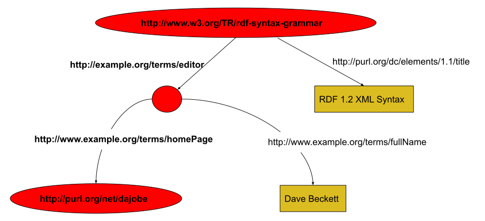

This document defines an XML
syntax for RDF called RDF/XML in terms of
Namespaces in XML, the XML Information Set
and XML Base.
Status of This Document
This section describes the status of this
document at the time of its publication. A list of current W3C
publications and the latest revision of this technical report can be found
in the W3C technical reports index at
https://www.w3.org/TR/.
This document is a part of the RDF 1.2 document suite. The
document defines the RDF/XML syntax,
a concrete syntax for RDF [RDF12-CONCEPTS].
Publication as a First Public Working Draft does not
imply endorsement by W3C and its Members.
This is a draft document and may be updated, replaced or obsoleted by other
documents at any time. It is inappropriate to cite this document as other
than work in progress.
This document was produced by a group
operating under the
W3C Patent
Policy.
W3C maintains a
public list of any patent disclosures
made in connection with the deliverables of
the group; that page also includes
instructions for disclosing a patent. An individual who has actual
knowledge of a patent which the individual believes contains
Essential Claim(s)
must disclose the information in accordance with
section 6 of the W3C Patent Policy.
This document defines the XML [XML10] syntax for RDF graphs.
This document revises the original RDF/XML grammar [RDF-SYNTAX-GRAMMAR-19990222]
in terms of XML Information Set [XML-INFOSET] information items which moves
away from the rather low-level details of XML, such as particular
forms of empty elements. This allows the grammar to be more
precisely recorded and the mapping from the XML syntax to the RDF
Graph more clearly shown. The mapping to the RDF graph is done by
emitting statements in the N-Triples [RDF12-N-TRIPLES] format.
A document describing the basic concepts underlying RDF, as
well as abstract syntax ("RDF Concepts and Abstract Syntax")
[RDF12-CONCEPTS]
A document describing the formal model-theoretic semantics
of RDF ("RDF Semantics") [RDF12-SEMANTICS]
N-Triples [N-TRIPLES] and N-Quads [N-QUADS] (line-based exchange formats)
A document describing RDF Schema [RDF-SCHEMA], which
provides a data-modeling vocabulary for RDF data.
For a longer introduction to the RDF/XML syntax with a historical
perspective, see "RDF: Understanding the Striped RDF/XML
Syntax" [STRIPEDRDF].
2. An XML Syntax for RDF
This section introduces the RDF/XML syntax, describes how it
encodes RDF graphs and explains this with examples. If there is any
conflict between this informal description and the formal description
of the syntax and grammar in sections
5. Syntax Data Model and
6. RDF/XML Grammar,
the latter two sections take precedence.
2.1 Introduction
The RDF Concepts and Abstract Syntax document [RDF12-CONCEPTS]
defines the RDF Graph data model and the
RDF Graph abstract syntax.
Along with the RDF Semantics [RDF12-SEMANTICS]
this provides an abstract syntax with a formal semantics for it.
The RDF graph has nodes
and labeled directed arcs
that link pairs of nodes and this is represented as a set of
RDF triples
where each triple contains a
subject node, predicate and object node.
Nodes are IRIs, literals, or blank nodes.
Blank nodes may be given
a document-local identifier called a
blank node identifier.
Predicates are IRIs
and can be interpreted as either a relationship between the two
nodes or as defining an attribute value (object node) for some
subject node.
In order to encode the graph in XML, the nodes and predicates have to be
represented in XML terms — element names, attribute names, element contents
and attribute values.
RDF/XML uses XML QNames
as defined in Namespaces in XML [XML-NAMES] to represent IRIs.
All QNames have a namespace name which is an IRI
and a short
local name.
In addition, QNames can either have a short
prefix
or be declared with the default namespace declaration and have none (but
still have a namespace name)
The IRI represented by a QName is determined by appending the
local name
part of the QName after the
namespace name (IRI) part of the QName.
This is used to shorten the IRI
of all predicates and some nodes.
IRIs identifying
subject and object nodes can also be stored as XML attribute values.
RDF literals
which can only be object nodes,
become either XML element text content or XML attribute values.
A graph can be considered a collection of paths of the form node,
predicate arc, node, predicate arc, node, predicate arc, ... node
which cover the entire graph. In RDF/XML these turn into sequences of
elements inside elements which alternate between elements for nodes
and predicate arcs. This has been called a series of node/arc
stripes. The node at the start of the sequence turns into the
outermost element, the next predicate arc turns into a child element,
and so on. The stripes generally start at the top of an RDF/XML
document and always begin with nodes.
Several RDF/XML examples are given in the following sections
building up to complete RDF/XML documents. Example 7
is the first complete RDF/XML document.
An RDF graph is given in Figure 1
where the nodes are represented as ovals and contain their
IRIs where they have them, all the predicate arcs are labeled with
IRIs and string literals nodes have been written in rectangles.
If we follow one node, predicate arc ... , node path through the
graph shown in Figure 2:

Figure 2One Path Through the Graph
described in Example 4
highlighting the path from <http://www.w3.org/TR/rdf-syntax-grammar>
to <http://purl.org/net/dajobe>.
Elements along the path are marked in bold text.
The left hand side of the Figure 2
graph corresponds to the node/predicate arc stripes:
Node with IRI http://www.w3.org/TR/rdf-syntax-grammar
Predicate Arc labeled with IRI http://example.org/terms/editor
Node with no IRI
Predicate Arc labeled with IRI http://example.org/terms/homePage
Node with IRI http://purl.org/net/dajobe/
In RDF/XML, the sequence of 5 nodes and predicate arcs on
the left hand side of Figure 2 corresponds to
the usage of five XML elements of two types, for the graph nodes and
predicate arcs. These are conventionally called node elements and
property elements respectively. In the striping shown in
Example 1, rdf:Description is the
node element (used three times for the three nodes) and
ex:editor and ex:homePage are the two
property elements.
Example 1: Striped RDF/XML (nodes and predicate arcs)
The Figure 2 graph consists of some nodes
that are IRIs (and others that are not) and this can be added
to the RDF/XML using the rdf:about attribute on node
elements to give the result in Example 2:
There are several abbreviations that can be used to make common
uses easier to write down. In particular, it is common that a
subject node in the RDF graph has multiple outgoing predicate arcs. RDF/XML
provides an abbreviation for the corresponding syntax when a node
element about a resource has multiple property elements. This can be
abbreviated by using multiple child property elements inside the node
element describing the subject node.
Taking Example 3, there are
two node elements that can take multiple property elements.
The subject node with IRI
http://www.w3.org/TR/rdf-syntax-grammar
has property elements ex:editor and ex:title
and the node element for the blank node can take ex:homePage
and ex:fullName. This abbreviation
gives the result shown in Example 4
(this example does show that there is a single blank node):
Example 4: Using multiple property elements on a node element
When a predicate arc in an RDF graph points to an object node which has no
further predicate arcs, which appears in RDF/XML as an empty node element
<rdf:Description rdf:about="..."></rdf:Description>
(or <rdf:Description rdf:about="..." />)
this form can be shortened. This is done by using the
IRI of the object node as the value of an XML attribute rdf:resource
on the containing property element and making the property element empty.
In this example, the property element ex:homePage
contains an empty node element with the IRI
http://purl.org/net/dajobe/. This can be replaced with
the empty property element form giving the result shown in
Example 5:
When a property element's content is string literal,
it may be possible to use it as an XML attribute on the
containing node element.
This can be done for multiple properties on the same node element
only if the property element name is not repeated
(required by XML — attribute names are unique on an XML element)
and any in-scope xml:lang on the
property element's string literal (if any) are the same
(see 2.7 Languages: xml:lang)
This abbreviation is known as a Property Attribute
and can be applied to any node element.
This abbreviation can also be used when the property element is
rdf:type and it has an rdf:resource attribute
the value of which is interpreted as a
IRI object node.
In Example 5:,
there are two property elements with string literal content,
the dc:title and ex:fullName
property elements. These can be replaced with property attributes
giving the result shown in Example 6:
Example 6: Replacing property elements with string literal content into property attributes
2.6 Completing the Document: Document Element and XML Declaration
To create a complete RDF/XML document, the serialization of the
graph into XML is usually contained inside an rdf:RDF
XML element which becomes the top-level XML document element.
Conventionally the rdf:RDF element is also used to
declare the XML namespaces that are used, although that is not
required. When there is only one top-level node element inside
rdf:RDF, the rdf:RDF can be omitted
although any XML namespaces must still be declared.
The XML specification also permits an XML declaration at
the top of the document with the XML version and possibly the XML
content encoding. This is optional but recommended.
Completing the RDF/XML could be done for any of the correct
complete graph examples from
Example 4 onwards but taking the smallest
Example 6 and adding the final components,
gives a complete RDF/XML representation of the original
Figure 1 graph
in Example 7:
It is possible to omit rdf:RDF in
Example 7 above since there is only one
rdf:Description inside rdf:RDF but this
is not shown here.
2.7 Languages: xml:lang
RDF/XML permits the use of the xml:lang attribute as defined by
2.12 Language Identification
of XML 1.0 [XML10]
to allow the identification of content language.
The xml:lang attribute can be used on any node element or property element
to indicate that the included content is in the given language.
Typed literals
which includes XML literals
are not affected by this attribute.
The most specific in-scope language present
(if any) is applied to property element string literal content or
property attribute values. The xml:lang="" form
indicates the absence of a language identifier.
Some examples of marking content languages for RDF properties are shown in
Example 8:
2.8 XML Literals: rdf:parseType="Literal"
This section is non-normative.
RDF allows XML literals [RDF12-CONCEPTS]
to be given as the object node of a predicate.
These are written in RDF/XML as content of a property element (not
a property attribute) and indicated using the
rdf:parseType="Literal" attribute on the containing
property element.
An example of writing an XML literal is given in
Example 9 where
there is a single RDF triple with the subject node
IRI
http://example.org/item01, the predicate
IRI
http://example.org/stuff/1.0/prop (from
ex:prop) and the object node with XML literal
content beginning a:Box.
2.9 Typed Literals: rdf:datatype
RDF allows typed literals
to be given as the object node of a predicate. Typed literals consist of a literal
string and a datatype
IRI. These are written in RDF/XML using
the same syntax for literal string nodes in the property element form
(not property attribute) but with an additional
rdf:datatype="datatypeURI"
attribute on the property element. Any
IRI can be used in the attribute.
An example of an RDF typed
literal
is given in Example 10 where
there is a single RDF triple with the subject node
IRI
http://example.org/item01, the predicate
IRI
http://example.org/stuff/1.0/size (from
ex:size) and the object node with the
typed literal
("123", http://www.w3.org/2001/XMLSchema#int)
to be interpreted as an
XML Schema [XMLSCHEMA-2] datatype int.
2.10 Identifying Blank Nodes: rdf:nodeID
Blank nodes in the RDF graph are distinct but have no
IRI identifier.
It is sometimes required that the same graph blank node is referred to in the
RDF/XML in multiple places, such as at the subject and object
of several RDF triples. In this case, a blank node identifier
can be given to the blank node for identifying it
in the document. Blank node identifiers in RDF/XML are scoped to the
containing XML Information Set
document information item.
A blank node identifier is used
on a node element to replace
rdf:about="IRI"
or on a property element to replace
rdf:resource="IRI"
with rdf:nodeID="blank node identifier"
in both cases.
Taking Example 7 and explicitly giving
a blank node identifier of abc to the blank node in it
gives the result shown in Example 11.
The second rdf:Description property element is
about the blank node.
Blank nodes (not IRI nodes) in RDF graphs can be written
in a form that allows the
<rdf:Description></rdf:Description> pair to be omitted.
The omission is done by putting an
rdf:parseType="Resource"
attribute on the containing property element
that turns the property element into a property-and-node element,
which can itself have both property elements and property attributes.
Property attributes and the rdf:nodeID attribute
are not permitted on property-and-node elements.
Taking the earlier Example 7,
the contents of the ex:editor property element
could be alternatively done in this fashion to give
the form shown in Example 12:
2.12 Omitting Nodes: Property Attributes on an empty Property Element
If all of the property elements on a blank node element have
string literal values with the same in-scope xml:lang
value (if present) and each of these property elements appears at
most once and there is at most one rdf:type property
element with a IRI object node, these can be abbreviated by
moving them to be property attributes on the containing property
element which is made an empty element.
Taking the earlier Example 5,
the ex:editor property element contains a
blank node element with two property elements
ex:fullname and ex:homePage.
ex:homePage is not suitable here since it
does not have a string literal value, so it is being
ignored for the purposes of this example.
The abbreviated form removes the ex:fullName property element
and adds a new property attribute ex:fullName with the
string literal value of the deleted property element
to the ex:editor property element.
The blank node element becomes implicit in the now empty
ex:editor property element. The result is shown in
Example 13.
2.13 Typed Node Elements
It is common for RDF graphs to have rdf:type predicates
from subject nodes. These are conventionally called typed
nodes in the graph, or typed node elements in the
RDF/XML. RDF/XML allows this triple to be expressed more concisely.
by replacing the rdf:Description node element name with
the namespaced-element corresponding to the
IRI of the value of
the type relationship. There may, of course, be multiple rdf:type
predicates but only one can be used in this way, the others must remain as
property elements or property attributes.
The typed node elements are commonly used in RDF/XML with the built-in
classes in the RDF vocabulary:
rdf:Seq, rdf:Bag, rdf:Alt,
rdf:Statement, rdf:Property and
rdf:List.
RDF/XML allows further abbreviating IRIs in XML attributes in two
ways. The XML Infoset provides a base URI attribute xml:base
that sets the base URI for resolving relative IRIs, otherwise
the base URI is that of the document. The base URI applies to
all RDF/XML attributes that deal with IRIs which are rdf:about,
rdf:resource, rdf:ID
and rdf:datatype.
The rdf:ID attribute on a node element (not property
element, that has another meaning) can be used instead of
rdf:about and gives a relative IRI equivalent to #
concatenated with the rdf:ID attribute value. So for
example if rdf:ID="name", that would be equivalent
to rdf:about="#name". rdf:ID provides an additional
check since the same name can only appear once in the
scope of an xml:base value (or document, if none is given),
so is useful for defining a set of distinct,
related terms relative to the same IRI.
Both forms require a base URI to be known, either from an in-scope
xml:base or from the URI of the RDF/XML document.
Example 16 shows abbreviating the node
IRI of http://example.org/here/#snack using an
xml:base of http://example.org/here/ and
an rdf:ID on the rdf:Description node element.
The object node of the ex:prop predicate is an
absolute IRI
resolved from the rdf:resource XML attribute value
using the in-scope base URI to give the
IRI http://example.org/here/fruit/apple.
2.15 Container Membership Property Elements: rdf:li and rdf:_n
RDF has a set of container membership properties
and corresponding property elements that are mostly used with
instances of the
rdf:Seq, rdf:Bag and rdf:Alt
classes which may be written as typed node elements. The list properties are
rdf:_1, rdf:_2 etc. and can be written
as property elements or property attributes as shown in
Example 17. There is an rdf:li
special property element that is equivalent to
rdf:_1, rdf:_2 in order,
explained in detail in 6.4 List Expansion Rules.
The mapping to the container membership properties is
always done in the order that the rdf:li special
property elements appear in XML — the document order is significant.
The equivalent RDF/XML to Example 17 written
in this form is shown in Example 18.
2.16 Collections: rdf:parseType="Collection"
RDF/XML allows an rdf:parseType="Collection"
attribute on a property element to let it contain multiple node
elements. These contained node elements give the set of subject
nodes of the collection. This syntax form corresponds to a set of
triples connecting the collection of subject nodes, the exact triples
generated are described in detail in
6.2.19 Production parseTypeCollectionPropertyElt.
The collection construction is always done in the order that the node
elements appear in the XML document. Whether the order of the
collection of nodes is significant is an application issue and not
defined here.
Example 19 shows a collection of three
nodes elements at the end of the ex:hasFruit
property element using this form.
2.17 Reifying Statements: rdf:ID
The rdf:ID attribute can be used on a property
element to reify the triple that it generates (See
6.3 Reification Rules for the
full details).
The identifier for the triple should be constructed as a
IRI
made from the relative IRI
# concatenated with the rdf:ID attribute
value, resolved against the in-scope base URI. So for example if
rdf:ID="triple", that would be equivalent to the IRI
formed from relative IRI #triple against the base URI.
Each (rdf:ID attribute value, base URI)
pair has to be unique in an RDF/XML document,
see constraint-id.
Example 20 shows a rdf:ID
being used to reify a triple made from the ex:prop
property element giving the reified triple the
IRI http://example.org/triples/#triple1.
3. Conformance
As well as sections marked as non-normative, all authoring guidelines, diagrams, examples, and notes in this specification are non-normative. Everything else in this specification is normative.
The key words MAY, MUST, REQUIRED, SHOULD, and SHOULD NOT in this document
are to be interpreted as described in
BCP 14
[RFC2119] [RFC8174]
when, and only when, they appear in all capitals, as shown here.
All use of string without further qualification refers to
a Unicode [UNICODE] character string;
a sequence of characters represented by a code point in
Unicode.
The Internet Media Type (formerly known as MIME Type) for RDF/XML is
application/rdf+xml — [RFC3870].
It is recommended that RDF/XML files have the extension ".rdf"
(all lowercase) on all platforms.
It is recommended that RDF/XML files stored on Macintosh HFS file
systems be given a file type of "rdf "
(all lowercase, with a space character as the fourth letter).
The application/rdf+xml media type has been registered at IANA as [RFC3870].
The RDF namespace IRI (or namespace name) is
http://www.w3.org/1999/02/22-rdf-syntax-ns#
and is typically used in XML with the prefix rdf
although other prefix strings may be used.
The RDF Vocabulary
is identified by this namespace name and consists of the following names only:
Syntax names — not concepts
RDF Description ID about parseType resource li nodeID datatype
Class names
Seq Bag Alt Statement Property XMLLiteral List
Property names
subject predicate object type value first rest _n
where n is a decimal integer greater than zero with no leading zeros.
Resource names
nil
Any other names are not defined and SHOULD generate a warning when
encountered, but should otherwise behave normally.
Within RDF/XML documents it is not permitted to use XML namespaces
whose namespace name is the
·RDF namespace IRI·
concatenated with additional characters.
Throughout this document the terminology rdf:name
will be used to indicate name is from the RDF vocabulary
and it has a IRI of the concatenation of the
·RDF namespace IRI· and name.
For example, rdf:type has the IRI
http://www.w3.org/1999/02/22-rdf-syntax-ns#type
4.2 Identifiers
The RDF Concepts document [RDF12-CONCEPTS]
defines the three types of RDF data that can act as node
and/or predicate:
IRI
IRIs can act as node (both subject and object) and as
predicate.
given as XML attribute values interpreted as relative
IRIs that are resolved against the in-scope base URI
as described in 4.3 Resolving IRIs
to give absolute IRIs
transformed from XML namespace-qualified element and attribute names
(QNames)
transformed from rdf:ID attribute values.
Within RDF/XML, XML QNames are transformed into
IRIs
by appending the XML local name to the namespace name (IRI).
For example, if the XML namespace prefix foo has
namespace name (IRI)
http://example.org/somewhere/ then the QName
foo:bar would correspond to the IRI
http://example.org/somewhere/bar. Note that this
restricts which
IRIs can be made and the same IRI can be given in multiple ways.
The rdf:ID values
are transformed into
IRIs
by appending the attribute value to the result of appending
"#" to the in-scope base URI which is defined in
4.3 Resolving IRIs
Literal
Literals can only act as object nodes.
Literals always have a datatype. Language-tagged strings get
the datatype rdf:langString. When there is no
language tag or datatype specified the literal is assumed to have the datatype
xsd:string.
Blank Node
Blank nodes can act as subject node and as object node.
Blank nodes have distinct identity in the RDF graph.
When the graph is written in a syntax such as RDF/XML, these
blank nodes may need graph-local identifiers and a syntax
in order to preserve this distinction. These local identifiers are called
blank node identifiers
and are used in RDF/XML as values of the rdf:nodeID attribute
with the syntax given in Production nodeIdAttr.
Blank node identifiers in RDF/XML are scoped to the XML Information Set
document information item.
If no blank node identifier is given explicitly as an
rdf:nodeID attribute value then one will need to be
generated (using generated-blank-node-id,
see 5.3.3 Grammar Action Notation).
Such generated blank node
identifiers must not clash with any blank node identifiers derived
from rdf:nodeID attribute values. This can be
implemented by any method that preserves the distinct identity of all
the blank nodes in the graph, that is, the same blank node identifier
is not given for different blank nodes. One possible method would be
to add a constant prefix to all the rdf:nodeID attribute
values and ensure no generated blank node identifiers ever used that
prefix. Another would be to map all rdf:nodeID attribute
values to new generated blank node identifiers and perform that mapping
on all such values in the RDF/XML document.
4.3 Resolving IRIs
RDF/XML supports
XML Base [XMLBASE]
which defines a
·base-uri·
accessor for each ·root event· and
·element event·.
Relative IRIs are resolved into
IRIs
according to the algorithm specified in [XMLBASE] (and RFC 2396).
These specifications do not specify an algorithm for resolving a
fragment identifier alone, such as #foo, or the empty
string "" into an
IRI. In RDF/XML, a fragment identifier
is transformed into an IRI
by appending the fragment identifier to the in-scope base URI. The
empty string is transformed
into an IRI by substituting the in-scope base URI.
An empty same document reference ""
resolves against the URI part of the base URI; any fragment part
is ignored. See
Uniform Resource Identifiers (URI) [RFC3986].
Implementation Note (Informative):
When using a hierarchical base
URI that has no path component (/), it must be added before using as a
base URI for resolving.
Each application of production idAttr
matches an attribute. The pair formed by the
·string-value·
accessor of the matched attribute and the
·base-uri·
accessor of the matched attribute is unique within a single RDF/XML
document.
This document specifies the syntax of RDF/XML as a grammar on an
alphabet of symbols. The symbols are called events in the
style of the XPATH
Information Set Mapping.
A sequence of events is normally derived from an XML document, in
which case they are in document order as defined below in
5.2 Information Set Mapping.
The sequence these events form are intended to be similar to the sequence
of events produced by the [SAX] XML API from
the same XML document. Sequences of events may be checked against
the grammar to determine whether they are or are not syntactically
well-formed RDF/XML.
The grammar productions may include actions which fire when the
production is recognized. Taken together these actions define a
transformation from any syntactically well-formed RDF/XML sequence of
events into an RDF graph represented in the N-Triples [RDF12-N-TRIPLES]
language.
The model given here illustrates one way to create a representation of
an RDF Graph
from an RDF/XML document. It does not mandate any implementation
method — any other method that results in a representation of the same
RDF Graph may be used.
In particular:
This specification permits any
representation of an RDF graph;
in particular, it does not require the use of N-Triples [RDF12-N-TRIPLES].
This specification does not require the use of
[XPATH] or [SAX]
This specification places no constraints on the order in which
software transforming RDF/XML into a representation of a graph,
constructs the representation of the graph.
Software transforming RDF/XML into a representation of a graph
MAY eliminate duplicate predicate arcs.
The syntax does not support non-well-formed XML documents, nor
documents that otherwise do not have an XML Information Set; for
example, that do not conform to
Namespaces in XML [XML-NAMES].
The Infoset requires support for
XML Base [XMLBASE].
RDF/XML uses the information item property [base URI], discussed in
4.3 Resolving IRIs
This specification requires an
XML Information Set [XML-INFOSET]
which supports at least the following information items and
properties for RDF/XML:
Other information items and properties have no mapping to
syntax data model events.
Element information items with reserved XML Names
(See Name in Extensible Markup Language (XML) 1.0 (Fifth Edition))
are not mapped to data model element events.
These are all those with property [prefix] beginning with xml
(case independent comparison) and all those with [prefix] property
having no value and which have [local name] beginning with
xml (case independent comparison).
This section is intended to satisfy the requirements for
Conformance
in the [XML-INFOSET] specification.
It specifies the information items and properties that are needed
to implement this specification.
5.1 Events
There are nine types of event defined in the following subsections.
Most events are constructed from an Infoset information item (except
for IRI,
blank node,
plain literal and
typed literal). The effect
of an event constructor is to create a new event with a unique identity,
distinct from all other events. Events have accessor operations on them
and most have the string-value accessor that may be a static value
or computed.
Set to the value of element information item property [local name].
namespace-name
Set to the value of element information item property [namespace name].
children
Set to the value of element information item property [children].
parent
Set to the value of element information item property [parent].
base-uri
Set to the value of element information item property [base URI].
attributes
Made from the value of element information item
property [attributes] which is a set of attribute
information items.
If this set contains an attribute information item
xml:lang ([namespace name] property with the value
"http://www.w3.org/XML/1998/namespace" and
[local name] property value "lang")
it is removed from the set of attribute information items and the
·language·
accessor is set to the [normalized-value] property of the
attribute information item.
All remaining reserved XML Names
(see Name in Extensible Markup Language (XML) 1.0 (Fifth Edition))
are now removed from the set.
These are, all attribute information items in the set with property [prefix]
beginning with xml
(case independent comparison) and all attribute information items with [prefix]
property having no value and which have [local name] beginning with
xml (case independent comparison) are removed.
Note that the [base URI] accessor is computed by XML Base before any
xml:base attribute information item is deleted.
The remaining set of attribute information items are then used
to construct a new set of
Attribute Events
which is assigned as the value of this accessor.
URI
Set to the string value of the concatenation of the
value of the namespace-name accessor and the value of the
local-name accessor.
URI-string-value
The value is the concatenation of the following in this order "<",
the escaped value of the
·URI·
accessor and ">".
The escaping of the
·URI·
accessor uses the N-Triples escapes for
IRIs [RDF12-N-TRIPLES].
li-counter
Set to the integer value 1.
language
Set from the
·attributes·
as described above.
If no value is given from the attributes, the value is set to the value of
the language accessor on the parent event (either a
Root Event or an
Element Event), which may be the empty string.
subject
Has no initial value. Takes a value that is an
Identifier event.
This accessor is used on elements that deal with one node in the RDF graph,
this generally being the subject of a statement.
5.1.3 End Element Event
Has no accessors. Marks the end of the containing element in
the sequence.
Set to the value of attribute information item property [local name].
namespace-name
Set to the value of attribute information item property [namespace name].
string-value
Set to the value of the attribute information item
property [normalized value] as specified by [XML10] (if an attribute whose normalized
value is a zero-length string, then the string-value is also
a zero-length string).
URI
If ·namespace-name· is present,
set to a string value of the concatenation of the value of the
·namespace-name· accessor
and the value of the
·local-name· accessor.
Otherwise if ·local-name· is
ID, about, resource,
parseType or type, set to a string
value of the concatenation of the
·RDF namespace IRI·
and the value of the ·local-name· accessor. Other non-namespaced
·local-name· accessor values are
forbidden.
The support for a limited set of non-namespaced names is
REQUIRED and intended to allow RDF/XML documents specified in
[RDF-SYNTAX-GRAMMAR-19990222] to remain valid; new documents
SHOULD NOT use these unqualified attributes and applications MAY
choose to warn when the unqualified form is seen in a document.
The construction of IRIs from XML attributes can generate the same
IRIs from different XML attributes. This can cause ambiguity in the
grammar when matching attribute events (such as when
rdf:about and about XML attributes are
both present). Documents that have this are illegal.
URI-string-value
The value is the concatenation of the following in this order "<",
the escaped value of the
·URI·
accessor and ">".
The escaping of the
·URI·
accessor uses the N-Triples escapes for
IRIs [RDF12-N-TRIPLES].
5.1.5 Text Event
Constructed from a sequence of one or more consecutive
character information items.
Has the single accessor:
string-value
Set to the value of the string made from concatenating the
[character code]
property of each of the character information items.
5.1.6 IRI Event
An event for a IRIs which has the following accessors:
identifier
Takes a string value used as an IRI.
string-value
The value is the concatenation of "<", the escaped
value of the ·identifier· accessor and ">"
These events are constructed by giving a value for the
·identifier· accessor.
For further information on identifiers in the RDF graph, see
4.2 Identifiers.
5.1.7 Blank Node Identifier Event
An event for a blank node identifier
which has the following accessors:
identifier
Takes a string value.
string-value
The value is a function of the value of the
·identifier· accessor.
The value begins with "_:" and the entire value MUST match the
N-Triples
BLANK_NODE_LABELD production.
The function MUST preserve distinct blank node identity as
discussed in in section 4.2 Identifiers.
These events are constructed by giving a value for the
·identifier· accessor.
For further information on identifiers in the RDF graph, see
4.2 Identifiers.
5.1.8 Plain Literal Event
Note
RDF/XML plain literals are in RDF 1.2 treated as
syntactic sugar for a literal with datatype
xsd:string (in case no language tag is present)
or as a literal with datatype rdf:langString (in
case a language tag is present). The mapping to N-Triples as
defined in this subsection is not affected by this change.
An event for a plain literal which can have the following accessors:
literal-value
Takes a string value.
literal-language
Takes a string value used as a language tag in an RDF plain literal.
string-value
The value is calculated from the other accessors as follows.
If ·literal-language· is the empty string
then the value is the concatenation of """ (1 double quote),
the escaped value of the
·literal-value· accessor
and """ (1 double quote).
Otherwise the value is the concatenation of """ (1 double quote),
the escaped value of the
·literal-value· accessor
""@" (1 double quote and a '@'),
and the value of the
·literal-language· accessor.
The escaping of the ·literal-value· accessor value uses the N-Triples
escapes for strings as described in [RDF12-N-TRIPLES]
for escaping certain characters such as ".
Interoperability Note (Informative):
Literals beginning with a Unicode combining character are
allowed however they may cause interoperability problems.
See [CHARMOD] for further information.
5.1.9 Typed Literal Event
An event for a typed literal which can have the following accessors:
literal-value
Takes a string value.
literal-datatype
Takes a string value used as an IRI.
string-value
The value is the concatenation of the following in this order
""" (1 double quote),
the escaped value of the
·literal-value· accessor,
""" (1 double quote), "^^<",
the escaped value of the
·literal-datatype· accessor
and ">".
The escaping of the ·literal-value· accessor value
uses the N-Triples
escapes for strings [RDF12-N-TRIPLES]
for escaping certain characters such as ".
The escaping of the ·literal-datatype· accessor value
must use the N-Triples escapes for IRI [RDF12-N-TRIPLES].
Interoperability Note (Informative):
Literals beginning with a Unicode combining character are
allowed however they may cause interoperability problems.
See [CHARMOD] for further information.
Note
Implementation Note (Informative):
In XML Schema (part 1) [XMLSCHEMA-1],
white space normalization
occurs during validation according to the value of the whiteSpace
facet. The syntax mapping used in this document occurs after this,
so the whiteSpace facet formally has no further effect.
5.2 Information Set Mapping
To transform the Infoset into the sequence of events
in document order, each
information item is transformed as described above to generate a
tree of events with accessors and values. Each element event is
then replaced as described below to turn the tree of events
into a sequence in document order.
The following notation is used to describe matching the sequence
of data model events as given in 5. Syntax Data Model
and the actions to perform for the matches.
The RDF/XML grammar is defined in terms of mapping from these matched
data model events to triples, using notation of the form:
number event-typeevent-content
action...
N-Triples
where the event-content is an expression matching
event-types (as defined in 5.1 Events),
using notation given in the following sections.
The number is used for reference purposes.
The grammar action may include generating
new triples to the graph, written in N-Triples [RDF12-N-TRIPLES]
format.
The following sections describe the general notation used and that
for event matching and actions.
A string created by concatenating the terms in order.
resolve(e, s)
A string created by interpreting string s as a relative IRI to the
·base-uri· accessor of e
as defined in 4.3 Resolving IRIs.
The resulting string represents an
IRI.
generated-blank-node-id()
A string value for a new distinct generated
blank node identifier
as defined in 4.2 Identifiers.
If the RDF/XML is a standalone XML document
(identified by presentation as an
application/rdf+xmlRDF media type object,
or by some other means) then the grammar may start with
production doc or
production nodeElement.
If the content is known to be RDF/XML by context, such as when
RDF/XML is embedded inside other XML content, then the grammar
can either start
at Element EventRDF
(only when an element is legal at that point in the XML)
or at production nodeElementList
(only when element content is legal, since this is a list of elements).
For such embedded RDF/XML, the
·base-uri·
value on the outermost element must be initialized from the containing
XML since no
Root Event will be available.
Note that if such embedding occurs, the grammar may be entered
several times but no state is expected to be preserved.
For node element e, the processing of some of the attributes
has to be done before other work such as dealing with children events
or other attributes. These can be processed in any order:
If there is an attribute a
in propertyAttr with
a.URI == rdf:type
then
u:=uri(identifier:=resolve(e, a.string-value))
and the following triple is added to the graph:
If element e has
e.URI =
rdf:li then apply the list expansion rules on element e.parent in
6.4 List Expansion Rules
to give a new URI u and
e.URI := u.
The action of this production must be done before the
actions of any sub-matches (resourcePropertyElt ... emptyPropertyElt).
Alternatively the result must be equivalent to as if it this action
was performed first, such as performing as the first
action of all of the sub-matches.
For element e, and the single contained nodeElement
n, first n must be processed using production
nodeElement.
Then the following statement is added to the graph:
If the rdf:ID attribute a is given, the above
statement is reified with
i := uri(identifier := resolve(e, concat("#", a.string-value)))
using the reification rules in
6.3 Reification Rules
and e.subject := i
If the rdf:ID attribute a is given, the above
statement is reified with
i := uri(identifier := resolve(e, concat("#", a.string-value)))
using the reification rules in
6.3 Reification Rules
and e.subject := i.
For element e and the literal l
that is the rdf:parseType="Literal" content.
l is not transformed by the syntax data model mapping into events
(as noted in section 5. Syntax Data Model)
but remains an XML Infoset of XML Information items.
l is transformed into the lexical form of an
XML literal
in the RDF graph x (a Unicode string)
by the following algorithm. This does not mandate any implementation
method — any other method that gives the same result may be used.
The Unicode string x is used as the lexical form of l
This Unicode string xSHOULD be in NFC Normal Form C [NFC]
Then o := typed-literal(literal-value := x, literal-datatype := http://www.w3.org/1999/02/22-rdf-syntax-ns#XMLLiteral )
and the following statement is added to the graph:
If the rdf:ID attribute a is given, the above
statement is reified with
i := uri(identifier := resolve(e, concat("#", a.string-value)))
using the reification rules in
6.3 Reification Rules
and e.subject := i.
If the rdf:ID attribute a is given, the
statement above is reified with
i := uri(identifier := resolve(e, concat("#", a.string-value)))
using the reification rules in
6.3 Reification Rules
and e.subject := i.
If the element content c is not empty, then use event
n to create a new sequence of events as follows:
start-element(URI := rdf:Description, subject := n, attributes := set()) c
end-element()
Then
process the resulting sequence using production
nodeElement.
If the rdf:ID attribute a is given,
either of the the above statements is reified with
i := uri(identifier := resolve(e, concat("#", a.string-value)))
using the reification rules in
6.3 Reification Rules.
If s is empty, no further work is performed.
For each event n in s and the
corresponding element event f in l, the following
statement is added to the graph:
All rdf:parseType attribute values other than the strings
"Resource", "Literal" or "Collection" are treated as if the value was
"Literal". This production matches and acts as if production
parseTypeLiteralPropertyElt
was matched.
No extra triples are generated for other rdf:parseType values.
If there are no attributes or only the
optional rdf:ID attribute i
then o := literal(literal-value:="", literal-language := e.language)
and the following statement is added to the graph:
and then if i is given, the above statement is reified with
uri(identifier := resolve(e, concat("#", i.string-value)))
using the reification rules in
6.3 Reification Rules.
and then if rdf:ID attribute i is given, the above statement is
reified with
uri(identifier := resolve(e, concat("#", i.string-value)))
using the reification rules in
6.3 Reification Rules.
For the given IRI event r and
the statement with terms s, p and o
corresponding to the N-Triples:
spo .
add the following statements to the graph:
r.string-value <http://www.w3.org/1999/02/22-rdf-syntax-ns#subject> s . r.string-value <http://www.w3.org/1999/02/22-rdf-syntax-ns#predicate> p . r.string-value <http://www.w3.org/1999/02/22-rdf-syntax-ns#object> o . r.string-value <http://www.w3.org/1999/02/22-rdf-syntax-ns#type> <http://www.w3.org/1999/02/22-rdf-syntax-ns#Statement> .
6.4 List Expansion Rules
For the given element e, create a new IRI u :=
concat("http://www.w3.org/1999/02/22-rdf-syntax-ns#_",
e.li-counter),
increment the
e.li-counter
property by 1 and return u.
7. Serializing an RDF Graph to RDF/XML
There are some RDF Graphs as defined in
[RDF12-CONCEPTS]that cannot be serialized in RDF/XML. These are those that:
Use property names that cannot be turned into XML namespace-qualified names.
An XML namespace-qualified name
(QName)
has restrictions on the legal characters such that not all property URIs
can be expressed as these names.
It is recommended that implementors of RDF serializers, in order to
break a URI into a namespace name and a local name, split it after
the last XML non-NCName
character, ensuring that the first character of the name is a
Letter or '_'.
If the URI ends in a
non-NCName
character then throw a "this graph cannot be serialized in RDF/XML"
exception or error.
Use inappropriate reserved names as properties
For example, a property with the same URI as any of the
syntaxTerms production.
Use the rdf:HTML datatype
This datatype as introduced in RDF 1.2 [RDF12-CONCEPTS].
Note
Implementation Note (Informative):
When an RDF graph is serialized to RDF/XML and has an XML Schema
Datatype (XSD), it SHOULD be written in a form that does not require
whitespace processing. XSD support is NOT required by RDF or RDF/XML
so this is optional.
This document contains two example graphs in SVG with such
embedded RDF/XML inside the metadata element:
figure 1 and figure 2.
A. Acknowledgments
This section is non-normative.
A.1 Acknowledgments the original specification
This section is non-normative.
This document is a product of extended deliberations by the RDF
Core working group, whose members have included: Art Barstow (W3C)
Dave Beckett (ILRT), Dan Brickley (W3C/ILRT), Dan Connolly (W3C),
Jeremy Carroll (Hewlett Packard), Ron Daniel (Interwoven Inc), Bill
dehOra (InterX), Jos De Roo (AGFA), Jan Grant (ILRT), Graham Klyne
(Clearswift and Nine by Nine), Frank Manola (MITRE Corporation),
Brian McBride (Hewlett Packard), Eric Miller (W3C), Stephen
Petschulat (IBM), Patrick Stickler (Nokia), Aaron Swartz (HWG), Mike
Dean (BBN Technologies / Verizon), R. V. Guha (Alpiri Inc), Pat Hayes
(IHMC), Sergey Melnik (Stanford University), Martyn Horner (Profium
Ltd).
This specification also draws upon an earlier RDF Model and Syntax
document edited by Ora Lassilla and Ralph Swick, and RDF Schema
edited by Dan Brickley and R. V. Guha. RDF and RDF Schema Working
group members who contributed to this earlier work are:
Nick Arnett (Verity), Tim Berners-Lee (W3C), Tim Bray (Textuality),
Dan Brickley (ILRT / University of Bristol), Walter Chang (Adobe),
Sailesh Chutani (Oracle), Dan Connolly (W3C), Ron Daniel
(DATAFUSION), Charles Frankston (Microsoft), Patrick Gannon
(CommerceNet), RV Guha (Epinions, previously of Netscape
Communications), Tom Hill (Apple Computer), Arthur van Hoff
(Marimba), Renato Iannella (DSTC), Sandeep Jain (Oracle), Kevin
Jones, (InterMind), Emiko Kezuka (Digital Vision Laboratories), Joe
Lapp (webMethods Inc.), Ora Lassila (Nokia Research Center), Andrew
Layman (Microsoft), Ralph LeVan (OCLC), John McCarthy (Lawrence
Berkeley National Laboratory), Chris McConnell (Microsoft), Murray
Maloney (Grif), Michael Mealling (Network Solutions), Norbert Mikula
(DataChannel), Eric Miller (OCLC), Jim Miller (W3C, emeritus), Frank
Olken (Lawrence Berkeley National Laboratory), Jean Paoli
(Microsoft), Sri Raghavan (Digital/Compaq), Lisa Rein (webMethods
Inc.), Paul Resnick (University of Michigan), Bill Roberts
(KnowledgeCite), Tsuyoshi Sakata (Digital Vision Laboratories), Bob
Schloss (IBM), Leon Shklar (Pencom Web Works), David Singer (IBM),
Wei (William) Song (SISU), Neel Sundaresan (IBM), Ralph Swick (W3C),
Naohiko Uramoto (IBM), Charles Wicksteed (Reuters Ltd.), Misha Wolf
(Reuters Ltd.), Lauren Wood (SoftQuad).
A.2 Acknowledgments for RDF 1.1
This section is non-normative.
Gavin Carothers provided the RDF 1.1 update for the Production
parseTypeLiteralPropertyElt. Ivan Herman provided valuable
comments and reworked Figs 1 and 2.
This specification is a product of extended deliberations by the
members of the RDFcore Working Group and the RDF and RDF Schema Working Group.
The following people provided valuable contributions to the document:
Dan Brickley, W3C/ILRT
Jeremy Carroll, HP Labs, Bristol
Graham Klyne, Nine by Nine
Bijan Parsia, MIND Lab at University of Maryland at College Park
A.3 Acknowledgments for RDF 1.2
This section is non-normative.
In addition to the editors, the following people have contributed to this specification:
Pierre-Antoine Champin
Members of the RDF-star Working Group Group included Adrian Gschwend, Andy Seaborne, Antoine Zimmermann, Dan Brickley, David Chaves-Fraga, Dominik Tomaszuk, Dörthe Arndt, Enrico Franconi, Fabien Gandon, Gregg Kellogg, Gregory Williams, Jesse Wright, Julián Arenas-Guerrero, Olaf Hartig, Ora Lassila, Pasquale Lisena, Peter Patel-Schneider, Pierre-Antoine Champin, Raphaël Troncy, Ruben Taelman, Rémi Ceres, Sarven Capadisli, Souripriya Das, Ted Thibodeau, and Timothée Haudebourg.
Editor's note
Recognize members of the Task Force? Not an easy to find list of contributors.
This appendix contains XML schemas for validating RDF/XML forms.
These are example schemas for information only and are not part of
this specification.
{kind=link}
{kind=link}